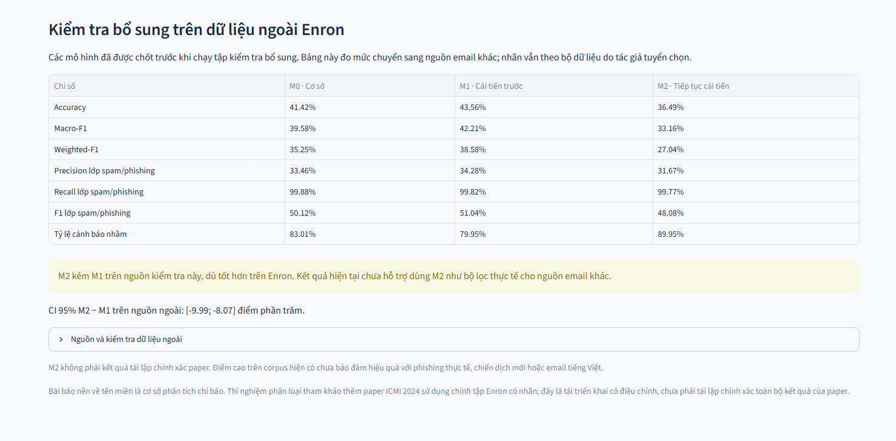

DT124 · DEMO NGOẠI TUYẾN · ẢNH CHỤP GIAO DIỆN THẬT
Phân tích EML và so sánh ba mô hình
Chụp trực tiếp ứng dụng Streamlit đang chạy trên máy cục bộ bằng Microsoft Edge. Các ảnh dưới đây không phải bản vẽ giao diện.
Cách chạy demo trực tiếp
- Tại thư mục DT124, chạy
.\.venv\Scripts\python.exe -m streamlit run app\streamlit_app.py.
- Mở địa chỉ localhost do Streamlit hiển thị. Chọn Mẫu bình thường rồi bấm Phân tích email.
- Chuyển sang Mẫu có chỉ báo bất thường, phân tích và xem các tab Tổng quan, Headers & xác thực, Đường dẫn, Tệp đính kèm.
- Chuyển sang So sánh mô hình: đọc kết quả M0/M1, bảng ba mô hình trên Enron và kiểm tra ngoài nguồn.
Hai EML tổng hợp dùng miền .test. Công cụ chỉ đọc tĩnh: không truy cập URL và không mở nội dung tệp đính kèm.
| Mẫu tổng hợp | Chỉ báo | URL | Đính kèm | Dự đoán nội dung |
|---|
| benign_synthetic.eml | 0 | 1 | 0 | M0: hợp lệ · M1: hợp lệ · M2: hợp lệ |
|---|
| suspicious_synthetic.eml | 5 | 2 | 1 | M0: spam/phishing · M1: spam/phishing · M2: spam/phishing |
|---|
Điểm quyết định có dấu của SVM không phải xác suất. Mẫu demo không được tính vào điểm benchmark.
Kết quả thực nghiệm đọc từ tệp đã lưu
| Mô hình | Macro-F1 Enron | Lỗi Enron | Macro-F1 SpamAssassin |
|---|
| M0 · TF-IDF từ + SVM | 99.1211% | 258 | 39.5809% |
|---|
| M1 · TF-IDF từ/ký tự + SVM | 99.3459% | 192 | 42.2102% |
|---|
| M2 · NB-weighted SVM | 99.4276% | 168 | 33.1610% |
|---|
Enron: 29.423 email, dự đoán ngoài fold theo nhóm. SpamAssassin: 5.799 email khác nguồn giữ riêng. Nhãn 1 có thể gồm spam thông thường theo nguồn dữ liệu.
Kết luận: M2 giảm lỗi trên Enron nhưng giảm chất lượng trên SpamAssassin. Kết quả M2 là thăm dò thích nghi sau khi đã xem M0/M1; chưa đủ bằng chứng coi M2 là bộ lọc tốt hơn cho mọi nguồn email.
10. Ba mô hình trên SpamAssassin và cảnh báo giảm chất lượng
